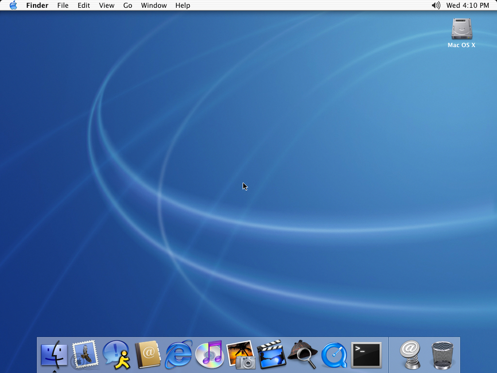
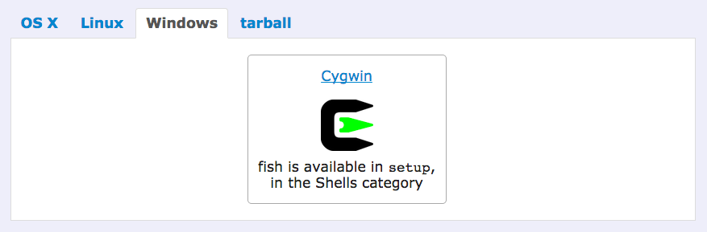

Trick Out Your Terminal
Welcome to the talk!
obligatory picture of my cat Molly looking super cute
Here is my obligatory cat pic.
The goals for my talk are two-fold:
1. First, I want to give beginners to the terminal a sense of what it's like to work with the command-line, and of the power behind the cursor. Even if you don't get or remember everything right away, just getting a brief glimpse of everything that's available will be enough so that as you explore, you'll have a handle of things to search for and get a better sense of.
2. Second, I want to give everyone, beginners through experts, an idea of the sorts of customization you can do with the command line, to make it more communicative, to really make it your own.
I'll start with some history of computer interfaces, then start talking about three different shells (different programs for issuing text commands), and walk through different usages of each. There's a lot of information, and I will be sure to post my slides, my notes, my sources, and you can always ask me for more info at the end.
a screenshot of the music video from the Talking Heads song 'Once in a Lifetime'
Before I dive in, I want to explain my motivations for starting with the history of the development of computer interaction. Engineers didn't set out to make opaque and frustrating interfaces. these things evolved out of technological constraints of the time, which included extremely limited computer speed and power. Those original machines were huge, expensive, they were centralized and access was strictly controlled. They were far less powerful than any smartphone we might carry around in our bags today.
If you look at the command line and think, "this is not my beautiful desktop, these are not my beautiful programs" then understanding how people interacted with those first machines might help contextualize the reason for the terse, short commands and limited interface.
So, how did we get here?
an engineer sitting at the console of an IBM 7094
I'm going to skip the ancient days of vaccuum tube computing and jump in to computers in the '50s and '60s, when the way that engineers wrote code was on punch cards
Back in the day, before widespread personal computing, computers were big centralized machines.
Here you see someone sitting at the console of an IBM 7094. you can the punch card reader to the right of the operator. Along the lefthand wall are cabinets full of core memory (which is wild, whole cabinets just for memory). drives and disks and control units in the center and filling the room behind.
That punch card reader is where engineers would load stacks of punch cards representing their programs.
To program with punch cards, engineers wrote out their programs on special forms and translated these forms into decks, which in turn were translated into stacks of punch cards.
This picture is of a specialized typewriter for creating punch cards
An image of a slightly mangled punch card.
These punch cards were sorted into stacks and then to run the program, they would be fed into the reader, which would send the programs to the computer, and then results printed out later.
"Users had to accommodate computers rather than the other way around."
—Raymond and Landley
In a book on Unix Usability, Eric Steven Raymond and Rob W. Landley wrote, "Users had to accommodate computers rather than the other way around; user interfaces were considered overhead, and software was designed to keep the processor at maximum utilization with as little overhead as possible.
...The turnaround time for a single job often spanned entire days."
That's a really long time to go before you find out that you got a compiler error from, say, a forgotten semicolon
In a day and age where user interface, UI, UX, and design are all highly valued and discussed, the fact that computing power was limited to the point of considering user interface as overhead is just a completely foreign mindset.
To move on from punch cards, there were several innovations that were key to the evolution of computer interfaces.
First, batch monitors were programs that were developed to run on computers constantly and be available to provide services to programs as they were executed. They also could do error reporting and give better messaging when errors occurred.

Then teleprinters were hooked up to these batch monitors. Teleprinters were like electronic typewriters crossed with telegrams. They'd been around since the early 20th century, and were originally used to communicate human-to-human, but with the advent of batch monitor programs, a teleprinter could be used to issue commands to a computer and receive output in turn.
They were still kind of clunky and inefficient, not to mention all the paper waste just printing out commands, but it was much quicker than the punch card system. Now people could receive feedback in almost real time.

Finally, video displays replaced teleprinters in the mid '70's. now this finally looks kind of familiar, like what many of us would actually identify as computers today.
But even though it looks a lot like a computer, this was not actually a computer. this picture is of a terminal. If you disconnected it and moved it elsewhere, it wouldn't be able to do anything, because it had no hard drives, memory, or processors. This was simply an interface to the actual computer itself.
To use a computer, you had to go and sit at a terminal like this one, type in your commands, and receive the output to the display.
a screenshot of some command line output in the bash shell
And that's basically the invention of the command line we know and love today. Compared to punch cards and teleprinters, they are way faster! You get immediate feedback! You can even change things on the fly in response to the output you get! Neat!
But is a tradeoff.
Raymond and Landley note that "These interfaces still placed a relatively heavy mnemonic load on the user, requiring a serious investment of effort and learning time to master."
...and that's still pretty true today

The Graphical User Interface that we're all familiar with was developed as an alternative to the command line interface.
It was a reaction to the steep learning curve perceived around the command line. When you use a GUI, you directly interact with the graphical representations of files and actions.
These interfaces were enabled by the inventions of video displays and input devices like the mouse. but the command line came first, a terse interface for a more technologically limited time.


With the rise of personal computing, we now have our interfaces attached directly to our computers.
"Terminals" still exist, but they aren't physical pieces of hardware anymore. They are now programs that live inside the GUI, emulating the same sort of experience as older physical terminals. The command line program for Mac OS is even called "Terminal". On Windows, the similar terminal emulator program is called "Command Prompt".
And if we have perfectly serviceable graphical interfaces in the modern era, why learn something arcane and kind of unapproachable like the command line?
Eric Raymond, in The Art of Unix Programming, particularly takes pains to note that the command line really shines when novice or casual users become more adept and perform more skilled tasks with computers.
Automation is your friend, and can be a lot easier to write on the command line. Tasks like enumeration or find-and-replace tasks, which can be kind of tedious, become an interesting challenge when you can write a program to do it for you.
For example, if you want to install a new application, you could install it by hand, or use a package manager like Homebrew for Mac OS to install, manage dependencies, update, and uninstall things for you with just a couple short commands.
But I also want to make the point that we don't have to take the command line as-is. Even though there are some really good reasons for why the command line is the way that it is, it also can still be better. It's terse to the point of being wholly unintelligible. We spend a lot of time with our tools, and the command line doesn't have to be a hostile or unaccomodating environment. It just takes a little more effort and a little more learning to make it friendly and expressive.

@brianleroux, https://github.com/brianleroux/quick-vim
For example, I recently discovered my friend's vim configuration. vim is a complex, powerful text editor that can be accessed from the command line. I'd mistaken it for some time as Sublime Text, a desktop GUI app, which is what I use to do the majority of my coding. If I'd known vim could look like this, I might've invested more time in learning it by now.
Personally, I find that it's not good enough to be efficient. I want to be comfortable with the stuff I work with. I want to open a window and think, "ahhh this is a place where I want to build things"
@jllord
I asked people on twitter to send me screenshots of their terminal customizations, and I got some really amazing responses, from clean and zen-line command lines like Jessica Lord's...
@randallagordon
...to super complex and informative prompts like Randall Gordon's.
@jennschiffer
There's a lot to learn on the command line, from everyday usage to tricking it out with the filepath, git status, username, and emoji like Jenn Schiffer did.
So let's get started with shells.
I've been talking alot about terminals and command lines, so what the heck are shells now?
These terms are often used rather interchangeably. The terminal, as you remember, is that physical device that they used to interface with computers back in the day. Nowadays it's the program that we use to emulate that old-school interface.
The command-line interpreter (CLI), or the shell, is the application that runs inside the terminal itself. It sits there waiting for input, executes that input, and returns the results, like a control center or a conduit.

so nowadays, instead of that physical terminal interface that I showed you before, the terminal is an emulator program you can open on your desktop GUI
The "shell" is the software that runs inside the terminal.
One of the most common shells is bash.
bashLet's take some first steps with bash.
I had some more history of the development of shells here, but I've edited it out in the interest of time. For now, I just want to note that one of the most widespread shells is called bash. It was created by an engineer named Brian Fox in 1989, when he was working for Richard Stallman's Free Software Foundation.
bash inherits a lot of characteristics from earlier shells like the Bourne shell, c shell, the korn shell, and even the original sh shell that was shipped with the first version of unix. bash was first shipped with Unix version 7.
 caution
caution Before I start showing you commands, I just want to emphasize that it's well worth the time it takes to understand commands really, really thoroughly before you just enter them into your shell.
You can actually tell the computer to do things like delete your entire home directory with just a few characters, and malicious pranksters (aka trolls) might try to trick a newbie with harmful commands. Never copy/paste a command from the internet without understanding precisely what it does.
Additionally, some sites will give you a quick command and url to just download things. Only download things from sources that you trust.
manbash-3.2$ man echo
ECHO(1) BSD General Commands Manual ECHO(1)
NAME
echo -- write arguments to the standard output
SYNOPSIS
echo [-n] [string ...]
DESCRIPTION
The echo utility writes any specified operands,
separated by single blank (` `) characters and
followed by a new-line (`\n`) character, to the
standard output.
The following option is available:
-n Do not print the trailing newline character.
[...]
Fortunately, there is on-board documentation for every command in right in the shell. If you want to read the documentation for a command, type "m-a-n", short for manual, followed by a space, followed by the command name. This is some sample output for the "echo" command.
You can also google commands for help, I do that a lot as well, since the documentation inside the shells can be a bit dry or dense
bash
Let's see what it's like to work in bash.
Starting off, this particular default implementation of bash shows the shell we're using, which is bash, and the version of bash running, 3.2. The dollar sign starts the area where we can type. This whole string of things is called the "prompt"
We can type whatever after the prompt; if there's invalid input, bash gives an error.
We can see where we are in our directory by typing in the command pwd and pressing enter. Looks like I'm in my home directory. We can change directories with the command cd.
To change directories, I have to type in a valid file path to a folder. Let's change to the folder (or directory, same thing) where I've been developing this talk. ~/Dropbox/osbridge.
The tilde character is short for my home directory, so the file paths that I type are in relation to that directory. It's a shortcut so I don't have to type /Users/lydia the entire time. if I press the "tab" key on an incomplete folder name, bash is smart enough to try to help me out and autocomplete the names and save me some keystrokes.
And I can see what's in a folder by just typing ls, so it prints out the list of most of the things in the folder. If I type ls followed by a valid folder name, I can see what's inside that folder. ls pics shows all of the images i'm using in my talk.
I can make a folder with the command mkdir, followed by the name I want. I'm going to make the folder demo. Then I can cd into that new directory.
I can then make a new empty file with the command touch, followed again by the name I want. Running ls again shows that new file is present inside this folder.
You might notice me typing the word clear a lot, this is to clear the current window so that my prompt is at the very top. I'm doing this so hopefully everyone can see a little better.
So something you might notice is that many of these commands are abbreviations or acronyms.
pwd cd lstouch mkdir cp mvvi vim emacs nano picorm rmdir chmod chown kill# ; . .. \ / * $ > >> | & - --man cat sudo find grep echo scp ssh pingThere are a lot of commands and most of them have little shorthand names. many are tiny applications that let you do things like read files, edit files, or log in to servers. there are also a lot of symbols, some of which are familiar from programming, and some are not.
and this is just a small sample of all the commands out there
But don't panic!
These things do take some time to learn, much like learning vocabulary in a new language. You get better at it with practice.
bash promptAnd finally, the fun bits: customization. "bash configures its prompt by using the PS1 and the PS2 environment variables.", which are system properties that the shell keeps track of. "PS1 defines the primary prompt that you will see."
We can type experiments with the prompt right inside the terminal, just by assigning characters to the PS1 prompt. So let's give it a shot.
Live demonstration follows.
bash promptThe first thing to do is type in capital-P capital-S number-1 followed by an = sign, and then start a string, single or double quote doesn't matter. Followed by... something. Let's go with a simple smiley face. I'm going to add a space after that, so it's easier to read commands that I type in after that. Then close the string with a followup quote character.
PS1=":) "
So, that prompt's cute. But let's make it a little more informative. Maybe we could put the user I'm logged in as in the prompt. I can press the up arrow key to get to my last command, and just edit that.
bash has special shorthand characters called "escape sequences" that are like environment variables. You can see them all if you run man bash. If I insert the escape sequence \u I get my username. If I insert \h, we see the hostname, which is the name of my computer on the network. And \w gives the current directory, which is what would be output by the command pwd, so we can see where we are.
and maybe it's time for an emoji. anyone have a favorite one?
PS1="\u@\h:\w "
Cool, that's everything. If we cd somewhere, you will see the prompt change accordingly.
.bashrcSo right now, this prompt stays the same, but if I open a new bash session, it'll revert to the old prompt.
To make our prompt changes permanent, we have to save this PS1 variable inside a configuration file called .bashrc
This is the file that bash reads when it starts up, to understand what to do and read settings. It's usually invisible on your computer because the file is started with a dot, and since those are usually configuration files, they're kept invisible by default.
ls -A ~So, if the .bashrc file is invisible, how can we see it? Fortunately, the ls command as an option called -A. We can see that by opening the documentation for ls by using the command man short for manual, followed by ls.
Finally, the tilde in that command is a shorthand for your home directory, as I mentioned earlier. If .bashrc doesn't show up, you can simply create it there.
A Mac gotcha: OS X handles bash settings differently than linux/unix. I don't have time to get in the nitty-gritty here, but the summary is that you might have to edit a file called .bash_profile instead.
.bashrc
.bash_profile or .profile
.bash_profile, .profile, and .bashrc conventions
http://dghubble.com/blog/posts/.bashprofile-.profile-and-.bashrc-conventions/
One or more of these editors will probably be installed on most shells you might use.
vim and emacs are the biggest two -- they're powerful, complex, and almost infinitely customizable. People also feel really, really passionate about them, so it's a good way to start a nerd war by asking what someone prefers.
There are also "smaller" editors like nano and pico that are less powerful, have fewer configuration options, and might be more approachable to begin with, so you might start there with exploring them. I stuck with nano for a really, really, really long time. vim has been only a very recent exploration for me, in the past year.
.bashrcSo to edit the .bashrc, I'm going to type vim - space followed by the path to the .bashrc file: tilde - slash - dot - bashrc
vim ~/.bashrc
This opens vim. To get into editing mode, I press the i key, and then paste in the prompt that we just figured out. To save, I (not intuitively whatsoever) press the escape key, and then enter the characters "colon w q", which means "write quit", saving the file and exiting vim.
How to Customize your Bash Prompt on a Linux VPS
https://www.digitalocean.com/community/tutorials/how-to-customize-your-bash-prompt-on-a-linux-vps
I want to move on to the other two shells that I wanted to introduce to you today, but most of these things we've gone through with bash will be applicable to zsh and fish as well. If you want to get going with bash, there are a lot of great resources to help you customize it out there. This Digital Ocean article, "How to Customize your Bash Prompt on a Linux VPS" by Jusin Ellingwood has some Linux-specific stuff at the beginning, but the later information on customizing bash is general and really approachable, and gets in to adding color to your bash prompt.
So let's talk about zsh
How to install: you can find installation instructions at zsh.org
Switching to zsh from bash is as easy as typing "zsh" at into the terminal. You may have to add a configuration line somewhere to make this new shell your default shell.
zsh vs. bash
It is an evolution of bash.
99% of the things you can do with bash, you can do with zsh. Plus! A few more features. Here are just a couple of the enhancements:...
If you type "cd" and press tab, zsh will show you valid directories to go from there.
zsh: command history
In bash, if you press the up key, you can see your previous commands. In zsh, you can type a command, and then press the up key, and see the things you've run previously with that command.
A huge repository of plugins and themes.
Under active development on github, tons of contributors, and even has stickers and t-shirts, if that's any indication of its popularity
Installing it is pretty easy; from the homepage they have a command you can copy to download and execute it (remember how I said to be careful with who you download from? I trusted oh-my-zsh, but you don't have to!)
oh my zsh
It'll set zsh as your default shell for you.
zsh with oh my zsh
Much like editing the .bashrc, zsh edits its preferences with a .zshrc file located in the home folder. oh my zsh has a ton of themes with cool colors and prompts that come with its installation, and choosing a new theme is as easy as editing the .zshrc file, finding the line with the ZSH_THEME variable, and setting it to the theme of your choosing. You can find a list of all its themes in a link from the oh my zsh homepage.
Now, zsh is great and all, but what I really actually wanted to come here to talk about today is...
fishThe friendly shell!!
Don't let the (admittedly adorable) text put you off, like zsh, fish is under active development on GitHub.
fish
fishshell.com
fish shell has installers for a ton of major platforms. If you're using homebrew on mac os, it's as easy as running the command brew install fish from your terminal.
fish
fishshell.com
There are also package installers for Mac OS, lots of flavors of Linux, and Cygwin on Windows, all on the homepage at fishshell.com
fish: colors
fish: command history

fish saves your commands, so if you've painstakingly typed in a long command before, it'll remember it and suggest it to you the next time. Much like zsh, but it'll suggest things for you right as you type.
fish: man page completions

If you type a command and then a dash, fish will print out a quick summary of all the possible options you can apply right inline, so you don't have to go into the man page view.
fish: usage

One of the most powerful things about fish, in my experience, is its active autocompletions. You might be taken aback at first by all this text flashing at you as you build a command, but this sort of realtime feedback has been just invaluable to me becoming more comfortable on the command line.
Commands are red until they are valid, and they become blue. You can tab to complete the suggestion partway, you can tab to see valid places in folders. fish tries to give you as much information as possible as you go.
zsh has a lot of the same features, but it's really the realtime feedback that makes it so compelling for me.
fish
fish also has a cool interactive way to set and customize your themes. if you run the command fish underscore config, it'll open a local web application in your browser
fish

Here you can use an actual interface(!) to select colors, themes, and functions. It's also a great place to use as a springboard for your own customizations.
If you are looking for more managed solutions to customizing fish, there are some frameworks out there, like "oh my fish" (inspired, of course, by zsh).
fish gotchas
bash$: git clone https://github.com/llkats/sample; && cd samplefish$: git clone https://github.com/llkats/sample; and cd sample Unlike bash and zsh which have clear legacies going back to the Bourne shell, fish took a wholly different approach, and so it has some syntax incompatibilities with bash and zsh. You have to learn how to declare and script the fish way, and that can have some downsides.
Just a small example is the sublist operator (as zsh calls it). You can run multiple commands in sequence in bash and zsh with the ampersand ampersand operator; for example, you can git clone a new repository and the immediately cd into the new folder that git created in one command. But in fish, you have to actually type the word "and" instead of the ampersands, and that's just one example.
Since fish is not as popular as bash, sometimes certain command-line tools or open source projects might not have fish support. Or you might find a neat shell script someone wrote, but then need to tweak or change it so fish is happy.
Hyperpolyglot: a fantastic site for cross-shell translations with grids of sample commands and operations and their translations across all sorts of shells.

A small demonstration of using fish with autocompletions and color coding hints.
bash: hella customizable and super prevalent
zsh: all that bash plus customizability and more
fish: helpful out of the pkg
In the end, what you use is up to you. They all have their pros and cons; you might start out with bash because that's what's already installed; you might take the leap for fish. The world is your oyster shell.
IE, stuff I could't fit into my presentation.
grep -Po 'filename=\S*' /sample/path/example.log
| cut -d= -f2- | sed -r 's/.*(\.[^.]+)$/\1/'
| tr A-Z a-z | sort | uniq -c |
sort -rn | less
Once you start getting comfortable with some commands, you might find the concepts of redirection, piping, and understanding standard in, standard out, and standard error really useful. These things all allow you to combine commands for huge effect.
This command is a something that a coworker shared with me, that parses a log file and counts the number of file occurrences by extension type that appear from greatest to least.

If you want to look more into how people customize their prompts, I encourage you to search for the word "dotfiles" on github. a lot of people have put their configuration files online, and it's a great place to get inspiration or "borrow" some scripts.
If you get inspired and want to put your own dotfiles online, make sure you don't put anything sensitive like ssh keys online!
doge shell is a fun little startup script that greets you every time you open your shell.
moonmoji puts the current moon phase into your prompt.
Similar to moonmoji, clockmoji puts the current time in your prompt.
https://github.com/alebcay/awesome-shell (bash, zsh)
Here's a link to a curated list of cool shell things on github; there are many, many more out there.
Digital Ocean Documentation
Jessica Dillon's Quickleft posts and ebook
The documentation at Digital Ocean is particularly good, even if you aren't building anything on their services, it's general enough to get great info from.
Eric Raymond has a bunch of his writings open-sourced online, if you want to learn more about the history, development, and philosophy of Unix.
Jessica Dillon wrote a great series of blog posts for Quickleft on beginning with the command line, which were recently compiled into an ebook you can get at Leanpub.
I just want to quickly thank some people: to the organizers and volunteers of Open Source Bridge, thank you for this event.
Special shoutout to my coworkers who saw a very rough version of this talk, gave me invaluable feedback, and sent me that awesome example of a long piped command.
To Rebecca Murphey for the mentorship suggestions that led me to submitting this topic to Open Source Bridge.
To all of these great folks on Twitter who sent me their awesome shell prompts.
Alex Dergachev's great command-line movie-to-gif conversion tool, which featured prominently in many of the examples I created for this talk.
And to all of you for attending and sticking through this talk, I hope you learned something!